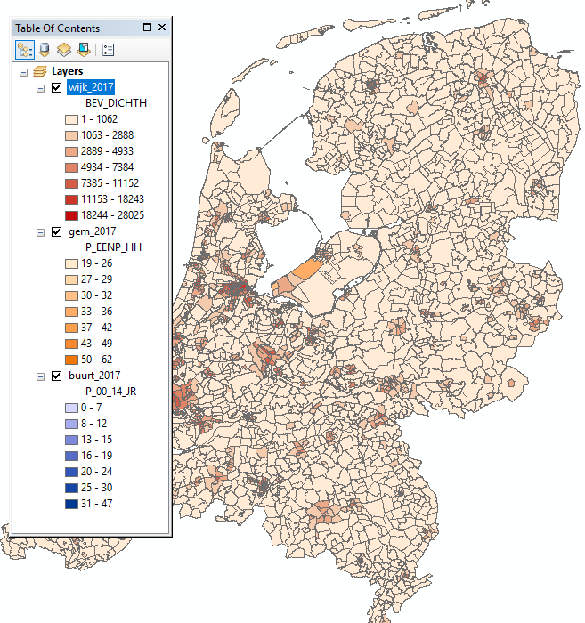
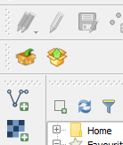
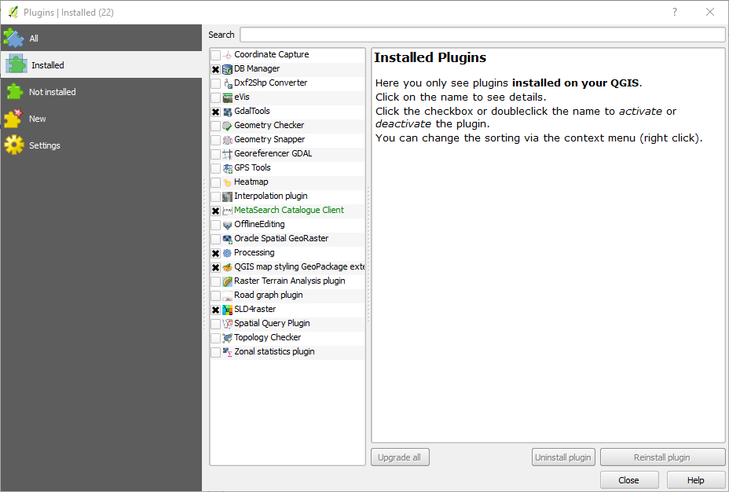
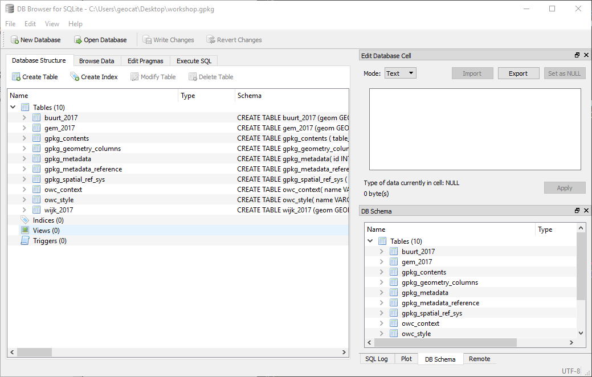
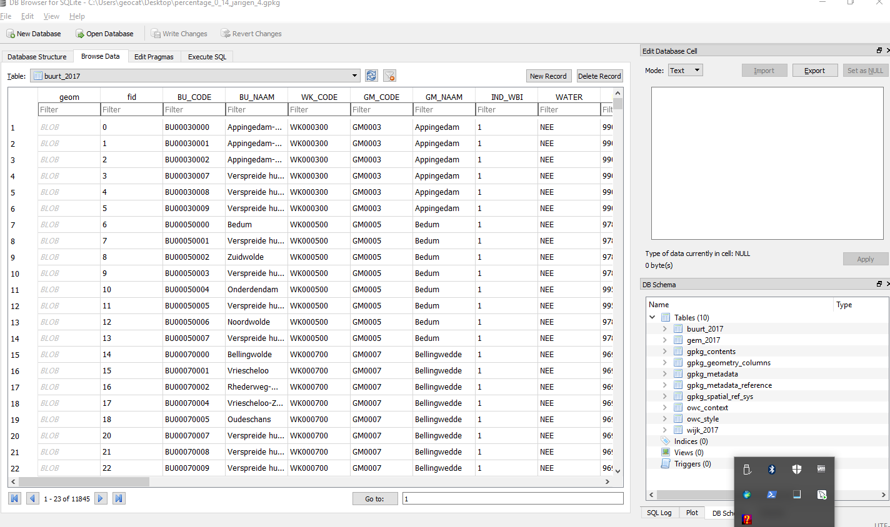

1. Explore GeoPackage¶
1.1. Open GeoPackage in QGIS¶
Download the OWS-context GeoPackage file here as workshop.gpkg. In the rest of this workshop there will be referred to workshop.gpkg.
This file has been generated with the OWS-context GeoPackage export functionality in GeoCat Bridge [1] . The original MXD in ArcGIS looks like this:
{kind=link}
QGIS should come with the QGIS GeoPackage extension installed. If the extension is installed and enabled the the following buttons should be visible:
{kind=link}
If the buttons are not visible check if the plugin is enabled. In the QGIS menubar click Plugins>Manage and install plugins and go to the Installed tab. Check that the QGIS Map Styling Geopackage Plugin is enabled:
{kind=link}
To open the GeoPackage click the Read project from geopackage button (the one with the arrow pointing up) and browse to the previously downloaded workshop.gpkg file. QGIS now opens up the OWS-context GeoPackage file:
{kind=link}
Unfortunately it is hard to tell on what attribute the classification is made, QGIS should take the title of the style which is in the SLD, but this still a pending issue. The layers in project are classified as follows:
gem_2017:P_EENP_HHwijk_2017:BEV_DICHTHbuurt_2017:P_00_14_JR
1.2. Open GeoPackage in DB Browser for SQLITE¶
Close QGIS and start up the program DB Browser for SQLite . Open the previously downloaded GeoPackage file. Note that you will need to set the file type of file browser to All files (*).
It should look more or less like this after you have opened the GeoPackage file:
{kind=link}
In the tab Database Structure the tables in the GeoPackage are listed. There are three categories of tables:
- Tables required by the GeoPackage format
- Tables required by the GeoPackage OWS-context format
- Dataset tables, in this case
buurt_2017,gem_2017``and ``wijk_2017
See below for a short description on each table in the GeoPackage. You can view the data by opening the Browse Data tab and then select the table you are interested in from the drop-down menu at the top of the page.
{kind=link}
GeoPackage format tables¶
gpkg_contents¶
Lists the datasets the GeoPackage contains. Column table_name contains the name of the table of that datasets. Any dataset in the GeoPackage needs to be registered in this table otherwise GeoPackage will not “see” the dataset in the GeoPackage.
gpkg_geometry_columns¶
Lists what column of the dataset contains the geometry and registers the coordinate reference system of that geometry.
gpkg_metadata¶
Table containing metadata of datasets. The format of the metadata (in the metadata column) is ISO19139.
gpkg_metadata_reference¶
Table maps metadata from gpkg_metadata table to dataset table. This mapping allows multiple datasets to share the same metadata record.
GeoPackage OWS-context format tables¶
owc_context¶
Containing the OWS-context file that defines the map definition; it contains which layers, layer sequence, map bounding-box and projection of the map.
ocw_resource¶
Table containing additional resource files. For example picture symbols, SVG icons and fonts referenced in style.
Dataset tables¶
Each dataset table contains a geometry column, an identifier column and zero or more attribute columns. The geometry is saved in Well Known Binary (WKB) geometry format, with an GeoPackage specific header, see the specification.